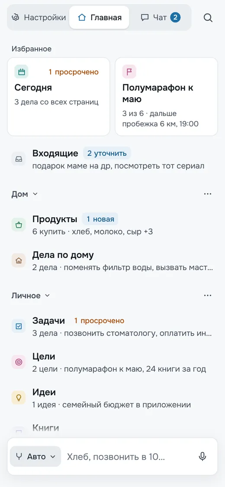
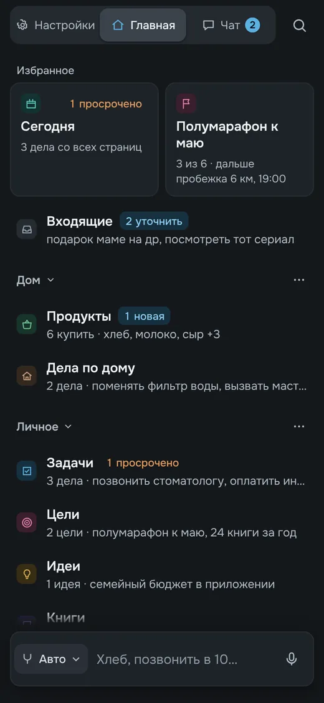
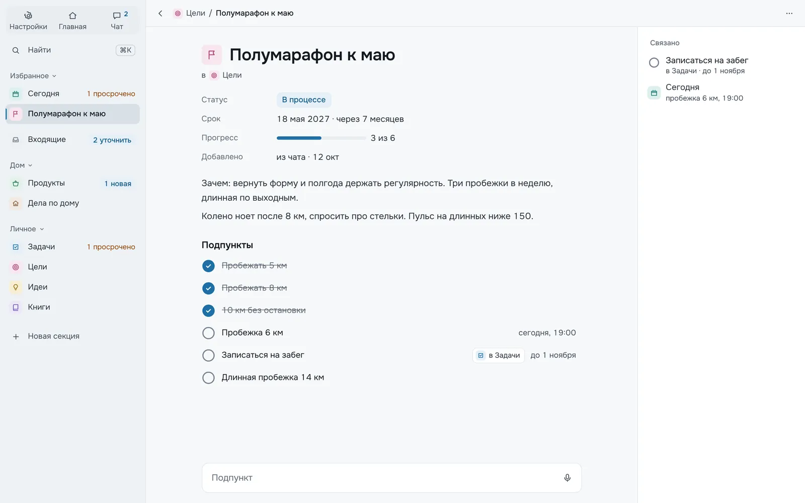
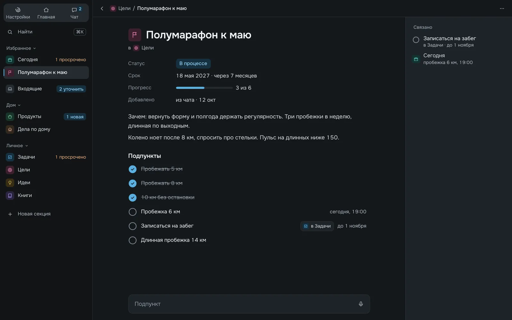
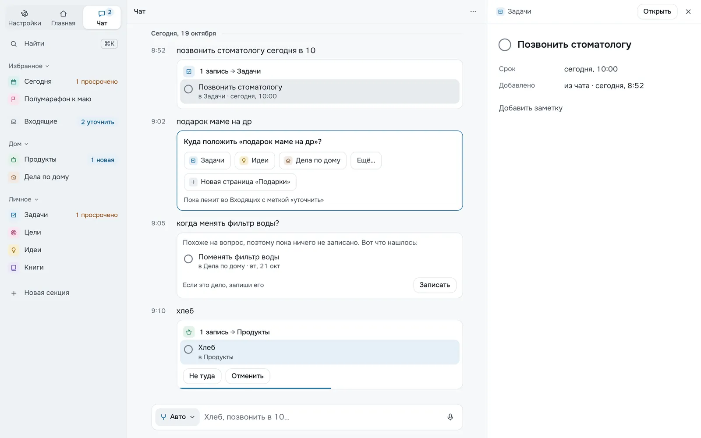
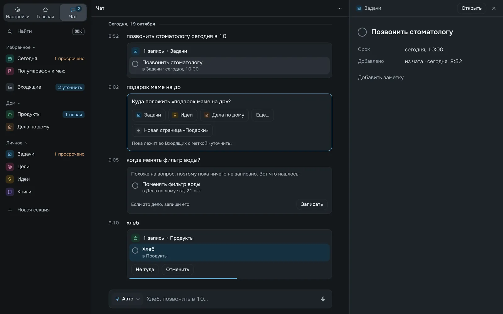

Главная
Как в макете



Совпадает с макетом. Сводка «Задач» начинается с просроченного дела, потому что оно важнее остальных.
Cerulean · клиент · 20 октября 2026
Клиент собран заново по финальным макетам v15. Черновик прошлой итерации удалён целиком, тема Nuxt UI выведена из токенов макетов, а каждое состояние из макетов снято в настоящем браузере и сверено с исходником в светлой и тёмной теме.
tokens.css, Nuxt UI получает их через свои переменные и app.config.ts. В компонентах нет ни одного цвета, :deep или !important.Слева кадр из макета v15, справа то же место в приложении. Снимки сделаны скриптом pnpm shots на продакшен-сборке в Chromium: телефон 390×844, десктоп 1440×900, демо-данные и часы на 19 октября 2026, 9:14, как в макетах. В сценариях «без сети» и «ждёт модель» запросы к OpenAI обрываются нарочно.
Как в макетесовпадаетЛучше макетапрактика выигралаИначеизменено намеренноНе хватаетв макете есть, здесь нет


Совпадает с макетом. Сводка «Задач» начинается с просроченного дела, потому что оно важнее остальных.


В макете при первом запуске страниц нет. Приложение сразу кладёт в избранное «Сегодня»: туда сами соберутся дела со сроком, и пустая «Сегодня» говорит об этом. Карточка про ключ и шаблоны как в макете.


Как в макете, и рядом с «Новой секцией» есть «Новая страница», чтобы завести страницу прямо с главной.


Дни недели считаются по календарю: 21 октября 2026 года это среда, в макете стоял вторник. У вопроса есть ссылка «Оставить там». Кнопки «Не туда» и «Отменить» видны, пока бежит полоска после записи, поэтому у записи 9:10 к 9:14 их уже нет.


Совпадает.


Пока пишешь, слева видно, куда уйдёт запись. В макете набран «кефир», здесь «купить молоко и хлеб».


Глагол отбрасывается, и фраза становится двумя записями, «Молоко» и «Хлеб». Квитанция показывает обе и даёт отменить.


Совпадает: карточка «Разбирается…» появляется сразу после отправки и держится, пока модель думает.


Совпадает: запись ждёт во Входящих с пометкой «ждёт сети» и разберётся сама, когда сеть вернётся.


«Порошок» попадает в «Бытовую химию», а не в «Прочее». У «Яиц» виден счётчик подпунктов 0/1. В макете открыт свайп у «Сыра», в приложении он появляется жестом.


Длинный подпункт переносится, а не обрезается. Полоска «Прогресс» появляется от двух подпунктов: с одним она только повторяла бы его.


Совпадает. Под настройкой сразу видны вкладки вида и подсказка, что писать можно внизу.


Пункты и порядок совпадают. Если строка не помещается, обрезается значение («еда, напитки, быт…»), а название пункта остаётся целым.


Тот же состав, иначе устроено: имя вида правится прямо в листе, группы, фильтр и сортировка выбираются списком на месте, без второго экрана. Свойств больше, потому что у «Продуктов» есть «Осталось».


Совпадает.


«Сегодня» собирается сама, поэтому у неё нет «+» и настроек вида. Заголовок «Просрочено» и подпись просроченного дела окрашены, как бейдж на главной.


Совпадает по устройству. 25 октября 2026 года воскресенье, в макете было «сб». Клавиатура в макете нарисована, в снимке браузера её нет.


Лист открывается поверх чата, жест «назад» его закрывает. В превью можно читать и отмечать, поэтому в нём нет «⋯» и «+»: остальное после «Открыть».


Ключ проверяется у OpenAI до сохранения. В демо ключа нет, поэтому строка предлагает его добавить. Тема по умолчанию «Как в системе». У «Экспорта» и «Импорта» есть стрелки: на телефоне они открывают меню и выбор файла.


Совпадает. На ширине десктопа сводки не обрезаются, в боковой панели есть «Новая страница». Подсказка поиска показывает Ctrl K на Windows и Linux и ⌘K на Mac.


Совпадает, включая колонку справа с «Из чата» и описанием для Авто. В макете показано наведение на «Молоко»: действия в приложении появляются так же.




Свойства, заметка и подпункты совпадают. Колонки «Связано» нет: связей между записями пока нет, поэтому «Записаться на забег» не показывает, что это дело лежит в «Задачах».




Совпадает, и запись из панели подсвечена в карточке чата. Панель только читает и отмечает, поэтому в ней нет «Добавить заметку»: заметка пишется после «Открыть».


Пустой запрос показывает недавнее по дням, справа компактный взгляд на страницу: первый вид списком, без вкладок. Какие страницы попадут в «Открыто сегодня», зависит от того, что открывали.


Совпадает. «Описания для Авто» раскрываются таблицей прямо здесь, каждое правится в диалоге. Корзина без счётчика, когда пуста.
Макет показывает один момент. В работающем приложении есть время, пустые состояния, плохая сеть и узкий экран, и там решения пришлось додумать.
Каждое расхождение со снимком разбиралось до причины. Вот что оказалось ошибкой приложения и исправлено в этом же PR.
Экраны, которые макеты описывают словами или не описывают вовсе. Тема снимков переключается там же, выше.


Nuxt UI не перекрашивается поверх, а получает значения через собственные переменные и конфиг. Поэтому любой новый компонент Nuxt UI сразу выглядит как Cerulean, а смена цвета делается в одном файле.
bg-canvas, text-accent-ink). Здесь же шкала шрифтов и радиусы.text-toned, bg-elevated, rounded-card. Ни цветов, ни произвольных размеров.| Nuxt UI или утилита | Токен | Что это |
|---|---|---|
--ui-bg | --surface | карточки, листы, поля, меню |
bg-canvas | --bg | фон экрана |
--ui-bg-muted | --hover | наведение |
--ui-bg-elevated | --sel | выбранная строка |
--ui-bg-accented | --pressed | нажатие |
--ui-text-highlighted | --ink | заголовки и названия |
--ui-text | --text | основной текст |
--ui-text-toned | --muted | подписи |
--ui-text-muted, -dimmed | --faint | время, плейсхолдеры |
--ui-border, --ui-border-accented | --line, --ring | линии и обводки |
--ui-primary, -error, -success | --accent, --warn, --ok | акцент и состояния |
app/: шестнадцатеричные цвета есть только в tokens.css. Исключения две: манифест PWA в nuxt.config.ts, которому нужно готовое значение, и чёрная альфа-маска для затухания края списка.!important только в правиле для prefers-reduced-motion.:deep и переопределений стилей Nuxt UI через CSS нет.:ui на месте встречается 12 раз, и только для размеров и раскладки: ширина окна, высота листа, моноширинный шрифт в поле ключа.--bg и меняется вместе с темой.ssr: false), Vue 3.5, Nuxt UI 4, Tailwind 4, Pinia. Автоимпорт выключен: каждый файл импортирует то, что использует.?peek= превью, ?find поиск, ?key окно ключа. Системный жест «назад» закрывает их.| Папка | Что внутри |
|---|---|
app/domain | Логика без Vue: разбор текста, правила Авто, даты, сводки, поиск, экспорт, демо-данные. Покрыта тестами. |
app/stores | data: страницы, записи, секции, настройки и запись в IndexedDB. journal: Чат, решение Авто, отмена, очередь без сети. ui: подтверждения и выбор страницы. |
app/db | Обёртка IndexedDB. |
app/composables | Телефон или десктоп, превью в адресе, поиск, свайп, диктовка, высота экрана с клавиатурой. |
app/components | shell, home, chat, composer, page с раскладками (список, доска, таблица, календарь), record, overlay, settings, common. |
app/pages | /, /chat, /p/:id, /r/:id, /settings, /settings/descriptions, /settings/trash. |
| Код клиента | 90 файлов .vue и .ts, около 10,5 тыс. строк. Черновик прошлой итерации (63 файла, 5,5 тыс. строк) удалён целиком. |
| Тесты | 24 теста: разбор текста, правила, даты, хранилище и журнал. |
| Типы и линтер | nuxt typecheck и eslint без ошибок. |
| Сверка | 33 сценария в двух темах, 66 кадров. Ошибок в консоли нет, кроме намеренно оборванных запросов к OpenAI в сценариях «без сети» и «ждёт модель». |
| Первая загрузка | JS 347 КБ в gzip (1,1 МБ без сжатия), CSS 33 КБ в gzip. |
| SDK OpenAI | 81 КБ в gzip, загружается только с ключом. |
| Офлайн-кеш | 63 файла, 1,75 МБ. |
| Иконки и шрифт | 91 иконка в бандле (25 КБ), Onest из пакета, без обращения к CDN. |
cd Client
pnpm install
pnpm dev # http://localhost:3000, демо-данные: /?demo
pnpm test # 24 теста
pnpm typecheck && pnpm lint
pnpm generate # статическая сборка в .output/public
pnpm shots [фильтр] # снимки в shots/ с запущенного приложения
# SHOTS_URL, SHOTS_OUT, SHOTS_CHROMIUM для другого адреса, папки, браузера